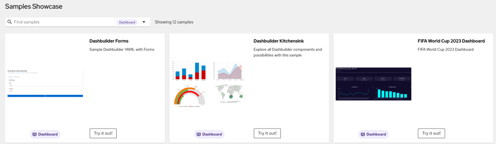
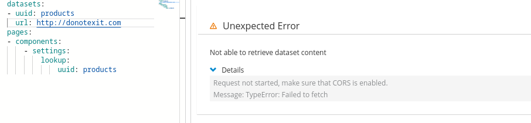
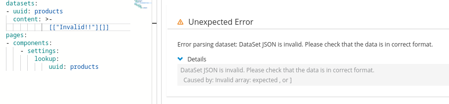
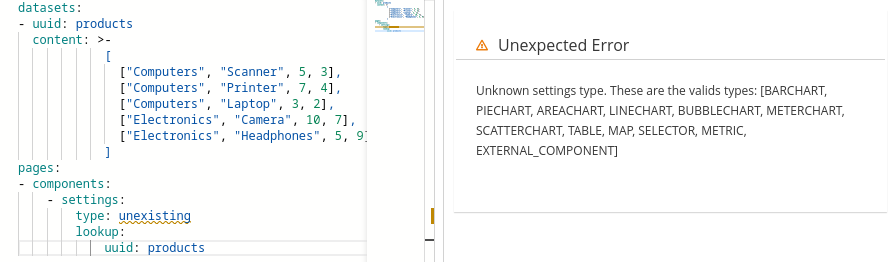

What’s new in Dashbuilder 0.28.0
Kie Tools 0.28.0 is out and with it we have multiple improvements to Dashbuilder. Let’s explore it!
Installation
The new editor is live in Serverless Logic WebTools and the VSCode extension is already available on the marketplace.
For NPM package users just update the dashbuilder-client dependency version to 0.28.0.
Dashbuilder Samples
We organized Dashbuilder samples in the Kie Samples repository. Notice you can also access examples directly from Serverless Logic WebTools.

Dashbuilder Cleanup and backend removal
Dashbuilder Authoring and Dashbuilder Runtime App were removed on this version. The reason is that Dashbuilder Runtime is now focused on YAML development and users who need a backend to produce datasets can make use of Dashbuilder Quarkus Extension.
As the consequence we removed 238k lines of code and made Dashbuilder faster and smaller:
- Java classes from 3088 to 1546
- Dashbuilder client bundle from 21mb to 18mb
- Main Javascript reduction from 1.8mb to 1.3mb (with gzip)
- Main Load time reduction from ~1.1s to ~900ms
Error Messages and User Feedback improvements
Continuing Dashbuilder user feedback improvements, my colleague Kumar Aditya made 3 great improvements:
- Improve unreachable URLs error message.

- Improve dataset parsing error message

- Show a message when a displayer configuration is invalid. Dashbuilder used to ignore the displayer with bad configuration, now it shows the cause for the bad configuration.

DataSet Improvements
Important improvements were made to Dashbuilder datasets
- Dataset columns: Now dashbuilder set the LABEL as the default type for columns and it is able to retrieve columns name from Metrics or CSVs
- Accumulate Flag: Datasets now can keep data in the memory if accumulate flag is true. This is especially important when reading metrics without Prometheus and having a displayer with auto update, then the metric values are kept in memory and you can display it any way you want. Learn more about it in the Pull request that introduced the accumulate flag
- CSV parser: The CSV parser had minor fixes and the only currently known limitation is regarding quoted fields with line break.
Conclusion
The 0.28.0 release is a great milestone for Dashbuilder! The backend removal was important not only for performance reasons, but also for code maintenance because now we have less classes to maintain and evolve :)